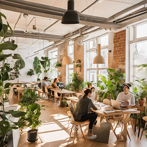

We are a community of cybersecurity experts and advocates. Cyberity was founded with a focus on advancing public education and promoting human rights through technology, with an emphasis on the use of open source.
Cyberity was founded to focus on public education, awareness, grassroot community-powered activities, and advocacy, with the following scope:
The public, government, and business need for awareness, education, and advocacy of cyber security, AI, and data protection has been increasing due to the massive digital incidents. Cyberity with its experts backed by grassroot communities are in a unique position to answer these challenges
We believe that sustainable collaboration with all stakeholders is the key to success. We have been doing activities in Indonesia, with international resources also available at our disposal, expanding our scope to the global level.
Our community have been doing various cybersecurity-related activities for years. Including, but not limited to, public education, training for trainers, advocating high-ranking government officials & institutions, assisting activists during cybersecurity incidents, and many more.
Hutan Kota Srengseng
Jl. H. Kelik, RT.8/RW.6, Kec. Kembangan,
Kota Jakarta Barat, DKI Jakarta 11630, Indonesia
email:
info@cyberity.foundation
